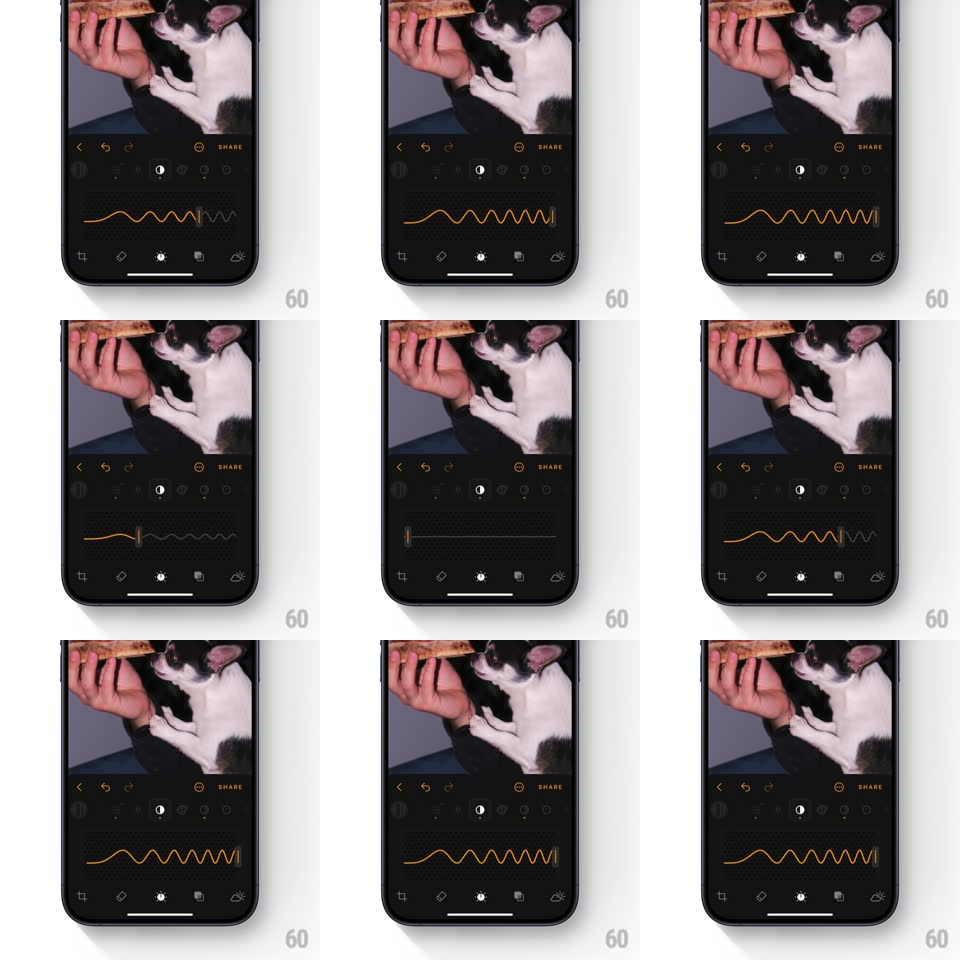

Media
Frame-by-frame

Rebuild this interaction 1:1: Luminar's contrast slider - the slider track is a live waveform: flat at zero contrast, and as you drag the handle right the track morphs into an increasingly high-amplitude zigzag wave around the handle, visualizing contrast itself.

Rebuild this interaction 1:1: Luminar's contrast slider - the slider track is a live waveform: flat at zero contrast, and as you drag the handle right the track morphs into an increasingly high-amplitude zigzag wave around the handle, visualizing contrast itself. ## Integration Integration: stack-agnostic spec - springs given as stiffness/damping, timed motions as duration + curve; map every value to your framework and animation library of choice. ## Scene Dark photo editor: photo of a cat top half, orange-accented tool rail, and the contrast control - a horizontal amber line that is the slider track, with a vertical handle. Bottom tool bar with crop / adjust icons. ## Motion spec Pattern: morphing-track slider. - At value 0: the track is a nearly flat amber line with barely visible ripples. - Drag: the track's wave amplitude maps directly to the value - the section around the handle oscillates with growing peaks (amplitude 0 -> ~14px at max), the filled portion left of the handle rendering the wave in solid amber, the remainder as a dimmer dashed ripple. - The handle is a short vertical bar that rides the wave's center, glowing brighter as amplitude grows (opacity 0.7 -> 1). - Release: the wave settles with a decaying oscillation (amplitude wobbles +/-2px, ~400ms, like a plucked string) before holding at its value. - The photo's contrast updates live in sync with the drag. ## Calibration - Wave frequency stays constant; only amplitude maps to value - the metaphor is "more contrast = bigger waves". - The flat-to-wavy morph is smooth and continuous, never stepping. ## Reduced motion Track stays a plain line with a standard fill; no wave. ## Don't miss - The unfilled track to the right still shows a faint ghost of the wave - the shape previews where you could go. - The amber is Luminar's signature accent - keep it on dark grey, no other hues.